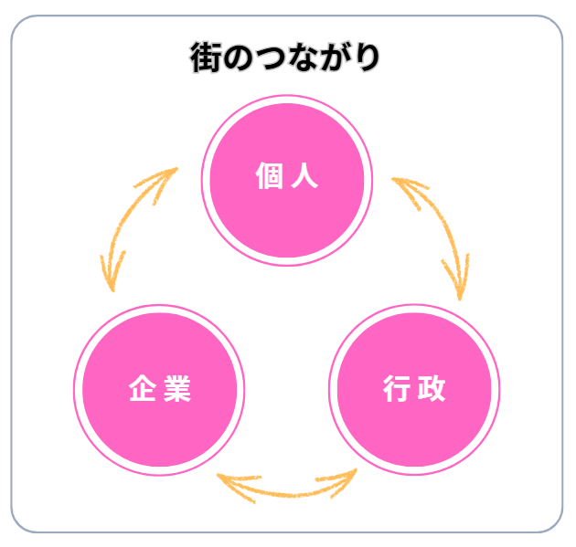
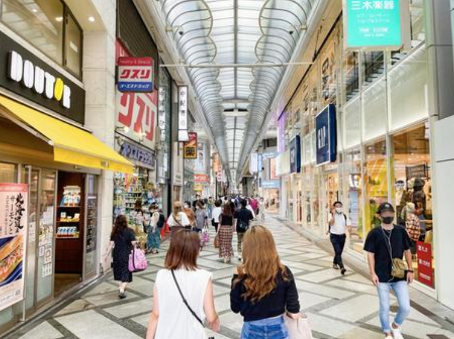
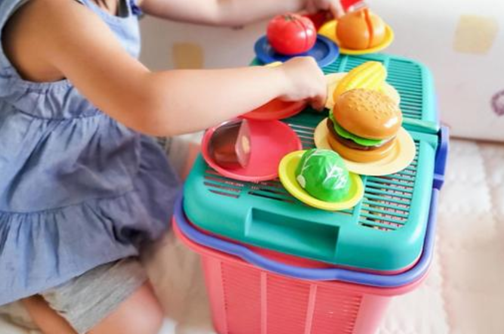

街は、人と人のつながりで笑顔になる。
私たち face は、人と人のつながりを育てることを大切にしています。
個人と個人、企業と人、行政と住民。それぞれが関わり合い、支え合う関係の中にこそ、地域の力が宿ると信じています。
地域の方々が、笑顔で「この街はステキ！」と感じてもらうには経済の循環が欠かせません。
お店が繁盛し、人が集い、地域経済が活性化する。そんな循環があってこそ、まちは生きている。
face は「人のつながり」と「経済の循環」を両輪に、笑顔が溢れる街づくりを進めています。
１日で終わらない。つながりが続くマルシェ。
ココまちマルシェは、地域に認知を高めるPRの場。
来場者にとっては、「このまちにこんなお店や企業があったんだ！」と再発見できるきっかけの場。
そして『行ってみたい！』『使ってみたい！』と感じてもらう。
ココまちマルシェは、日中の部と夜の部の二部構成で開催します。
日中の部は会場で楽しみ、夜の部は登録店で食事が楽しめます。
イベントの後は、LINEを使ったデジタル回覧板で、参加店や企業の情報を地域に発信し続けます。
認知を高めるPRの場
その流れを生み出すのが、ココまちマルシェです。
開催概要
| 名称 | ココまちマルシェ in 高根台 |
|---|---|
| 開催日 | 10:00～15:00 スペース搬入、搬出は別途時間を取ります |
| 会場 | 船橋市高根台公民館 |
| 主催 | 街づくり支援チーム face |
| 出店予定数 | 20ブース |
| 来場見込み | 500名（主にファミリー層を対象） |
| 広告費用（参加費） | 13,000円～（税別） |
| 後援 | 船橋市、船橋市教育委員会 |
「ココまちグルメ」も開催
ココまちグルメ
地元の味と人の想いをつなぐフード企画。
街の名店を食べ歩く企画です。
各店オリジナルのサービスを準備してご参加ください。
経済・教育・福祉をつなぐ、3つのチカラ。
地域の経済を回す
地元店舗・企業が新しいお客様と出会い、協力・連携を育むことで、地域の流れを強くします。
学びがまちを育てる
体験や交流を通して地域の魅力を再発見。次世代が地域の価値に気づくきっかけに。
支え合うしくみを築く
防災・福祉・子育てなど、行政と住民が手を取り合い、安心して暮らせるまちの基盤に。
街は、人と人のつながりで笑顔になる。
地域の循環をつくる。
市民が地域事業者の魅力に触れられる機会を増やし、実店舗集客／PR活動の場としての経済活動の促進を図ります。
また、子ども向けのワークショップや福祉防災防犯対策等のブースを設け、学びと支え合いの機会をひろげることで、地域の一体感を作ることを目的としています。
出店は地域に対するアプローチ
ココまちマルシェが生み出すつながりの循環
【ココまちモール】
ココまちマルシェは、地域に知ってもらうためのPRステージ。
- 地域住民に直接PRできる（来場者500名（主にファミリー層を対象））
- SNS・地域メディアでの発信支援
- 行政・教育・福祉とのネットワーク形成
- ココまちマルシェ公式LINE と オリジナルページで出店企業様の情報を毎月配信
開催告知
地域の多くの方に開催情報をお届けします。
イベントチラシ
20,000枚配布
⭐イベントチラシ配布予定場所
市内小学校、幼稚園、保育園、各店舗、個人宅へのポスティング
⭐当日配布パンフレパンフレット
会場図、タイムスケジュール、協賛社ロゴ、出店者ロゴ 500枚


このまちの笑顔は、あなたの一歩から。
ココまちマルシェは、単なるイベントではありません。あなたがつなぎ、地域が育てる未来の文化です。
出店、協賛、協力—かたちは違っても、「このまちを良くしたい」という想いは、ひとつ。
一緒に、まちの未来を育てましょう。